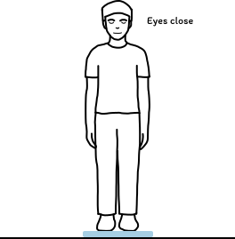

Stand like a flamingo
Then see exactly how much you wobbled. Free, open-source balance software for the Wii Balance Board.
Download the appsThen see exactly how much you wobbled. Free, open-source balance software for the Wii Balance Board.
Download the appsThe Eyes open-close activity compares the same stance with and without sight. Here are two simulated 10-second trials, run at the same time.

Path 0 mm

Path 0 mm
Closed ÷ open
–Running… 10 s